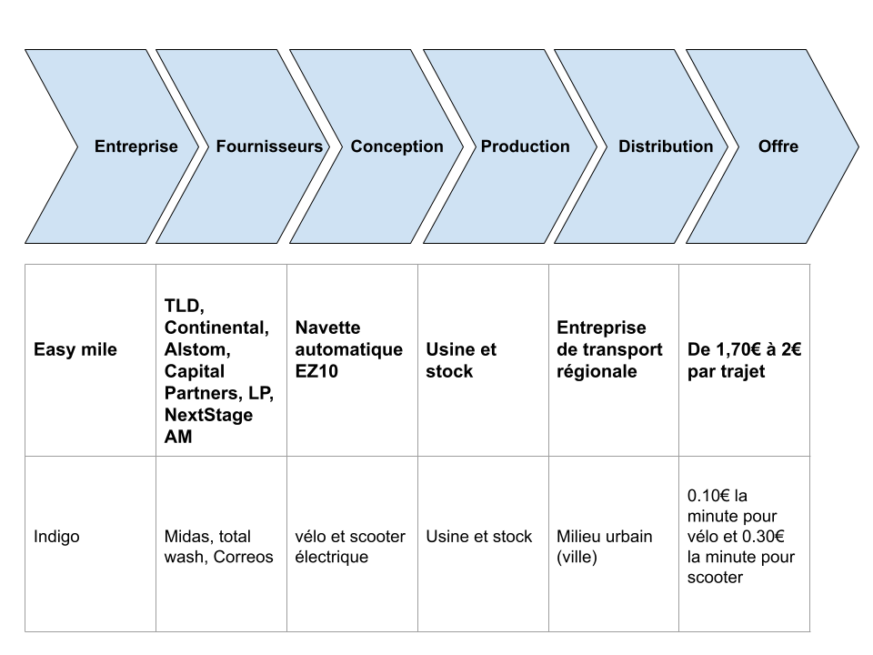

EasyMile
Présentation de chaque organisation :
caractérisation de l'organisation
L’organisation Easy mile est une entreprise de nationalité française avec des fins
sociétales. EasyMile fournit des solutions de véhicules autonomes pour le transport partagé,
l'automatisation intralogistique, etc. Il propose également la navette passagers EZ10 pour
les collectivités et les sites privés. Pour les industries, il suggère leur tracteur de remorquage
autonome TractEasy pour optimiser les chaînes d'approvisionnement.
Son principal objectif est le déplacement d’usage d’un point à un autre avec l’aide de
bus électriques automatisés, donc sans conducteur, dans un milieu urbain.L’entreprise est
considérée comme une entreprise de taille moyenne car elle comporte environ 250 salariés.
D’un point de vue juridique, l’entreprise Easy mile est une société.
Elle exerce sa fonction dans le secteur tertiaire car elle est centrée sur le transport
publique, donc son champ d’action est le fait de pouvoir se déplacer.
Historique présentation du contexte
En Juin 2014, Gilbert Gagnaire et Philippe Ligier voient l'avenir dans les solutions
de véhicules autonomes et co-fondent EasyMile, ouvrant des bureaux en France et à
Singapour.
En avril 2015, L'EZ 10 démarre en beauté avec pas moins de 6 navettes sans
conducteur circulant à l'Ecole Polytechnique Fédérale de Lausanne ou EPFL. Ils
transportent 6 000 personnes sur le campus avec le projet CityMobil2.
En janvier 2017, EasyMile impressionne les investisseurs lors d'une levée de fonds
réussie de série A, en utilisant les fonds pour accélérer la croissance. Elle profite également
de ces réseaux pour accroître sa portée mondiale.
Le Groupe PSA commence à utiliser le tracteur autonome TractEasy sur son site
industriel de Sochaux en conditions réelles d' acheminement des pièces détachées en
intérieur et extérieur jusqu'à la chaîne de montage.
Puis en novembre 2018, EasyMile fournit le tout premier service entièrement sans
conducteur au niveau 4 de la conduite autonome à Sorigny, démontrant sa capacité à fournir
une vue d'ensemble de la conduite autonome.
Ensuite, en janvier 2020 Tract Easy devient totalement autonome dans l'usine PSA
de Sochaux, traversant l'intérieur et l'extérieur pour optimiser les flux de pièces lourdes dans
leur usine de fabrication automobile.
Enfin, aujourd’hui Easy mile est entièrement autonome sur la voie publique.
Présentation de l'activité et des parties prenantes
L’entreprise a une activité commerciale concentrée sur la vente de prestation et de
service commerciaux, elle est dirigée par Gilbert Gagnaires et Philippe Ligier, elle possède
250 salariés. Elle est fournit par TLD, le fournisseur de technologie automobile de premier
plan Continental , le géant des transports Alstom et la banque d'investissement Bpifrance .
Ils sont rejoints par les actionnaires financiers Searchlight Capital Partners, LP , McWin et
NextStage AM.
Description des modèles économiques :
Présentation du/des produits ou services proposés
L'entreprise Easy mile propose uniquement des services centrés sur le déplacement
de citoyens dans un milieu urbain grâce à des grands bus électriques et automatisés.
Liste des principales dépenses
Leurs principales dépenses sont dans la création de navette automatisés et
dans la recherche pour améliorer les fonctionnement de ces navettes ainsi que le
développement.
Listes des principales recettes
Les principales recettes se font dans l'achat de tickets de transports.
Type de modèle adopté
Le type de modèle adopté est l’abonnement.
Etude des chaines de valeurs :
Lister les activité principal
Déposer des navettes en public pour permettre aux citoyens de se déplacer
facilement en ville.
Un driverless matériel de manutention solution pour les sites industriels, les centres
logistiques, les aéroports et d' autres industries intelligentes prêts à entrer dans une nouvelle
ère.
Lister des activités secondaire
Création de navette EZ10 pour l’implanter dans la voie publique.
Outils de diagnostic externes et internes
Analyse des forces concurrentielles avec un outil adapté
La technologie sans conducteur utilise une gamme de capteurs pour voir
l'environnement. Divers processus complexes sont nécessaires pour permettre une fonction
autonome et l'intelligence est fondamentale.
Uniquement EasyMile interne logiciel comprend un système embarqué aux
plates-formes de transport automatisé. Avec une gamme complète de capteurs, il collecte et
analyse les données enregistrées créant une image complète de l'environnement des
véhicules autonomes.
Analyse de l'environnement avec un outil adapté
Easy mile a une stratégie commerciale se reposant essentiellement sur un aspect
écologique. Son principal but est donc de créer des navettes autonomes fonctionnant grâce
à l'électricité pour garder cet aspect “green”.
Comparaison des choix stratégiques
Présentation des stratégies corporate et/ou buisness

Exemple de moyens de mise en oeuvre
Distribution de navettes au entreprise de transport régionale pour une mise à
disposition du public.
Cohérence d'ensemble
Choix des organisations/ Conformité à la demande
Nous avons choisi deux entreprises qui ont le même domaine de travail notamment
le transport et l’écologie.